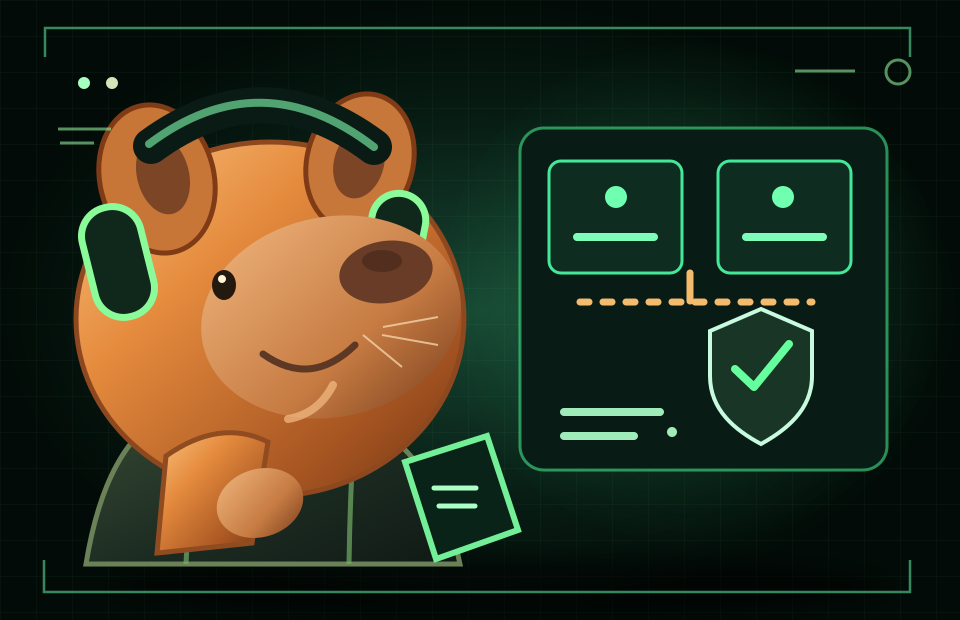
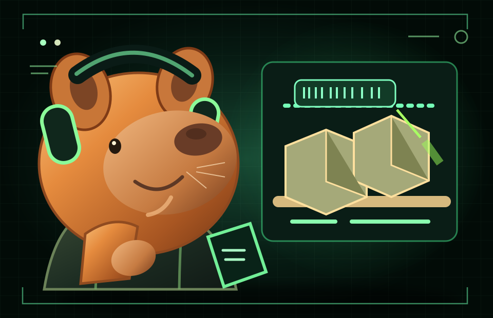
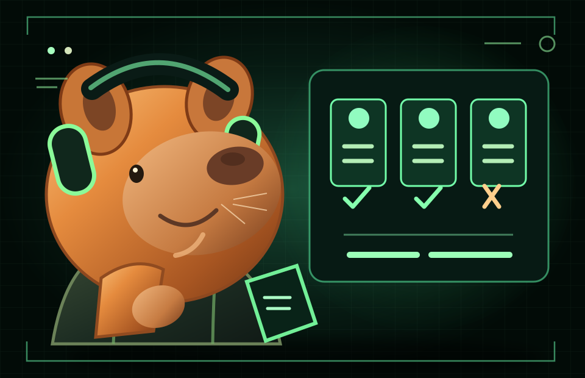

Read a brief and inspect time-stamped observations. Some evidence contradicts the obvious story.
Academy / Chapter 05 / Evidence Lab / Edition 2.2
Inspect the evidence.Earn your conclusion.
Three guided investigations. Each gives you a problem brief, evidence you can inspect, choices with consequences, and a debrief. The objective is not guessing the answer: it is learning how to reason under uncertainty.
EVIDENCE FIRSTFICTIONAL SCENARIOCHOOSE YOUR PATH
> protocol /evidence-lab
A simulation without collecting your answers.
Explore a possible action and discover what it might reveal, clarify or put at risk.
Compare your reasoning with the debrief and decide which control would actually demonstrate improvement.
INVESTIGATOR'S RULE_
A confident explanation is not necessarily a correct one. Open the evidence packets, test the competing ideas, and only then decide what would count as lasting improvement.
> select /simulation
Choose your investigation.

LAB 01 / SERVICE OPERATIONS
The regional sign-in outage
An identity gateway begins rejecting valid logins in one region after a certificate-key rotation. The obvious suspect may be the wrong one.
IS / IS NOTCAUSAL TEST
Investigate LAB 01 →
LAB 02 / QUALITY OPERATIONS
The warehouse scanning mystery
Wrong-item errors rise on one shift. Does the evidence point to staff behavior, shelf design, or a device change?
RATE VS COUNTCONTROLLED TRIAL
Investigate LAB 02 →
LAB 03 / DECISION ANALYSIS
The migration decision
Three hosting options compete for a critical reporting system. One attractive option fails a nonnegotiable requirement.
MUST / WANTRISK CONTROL
Investigate LAB 03 →All organizations, records, measurements, timelines, and outcomes are fictional teaching material. These are not operational instructions for a live production system.
> method /evidence-first
What good investigation looks like.
Observe first
Establish the actual deviation, affected population, comparison cases and quality of the evidence.
Choose discriminating tests
Ask which observation separates one plausible explanation from another—not just what confirms your favorite.
Close on a result
Workarounds reduce immediate impact. Permanent controls require an observable baseline, a suitable comparison and enough time.
Prefer to learn the method first?
Technique Pathfinder →Explore the foundations and Technique Pathfinder before starting a case.